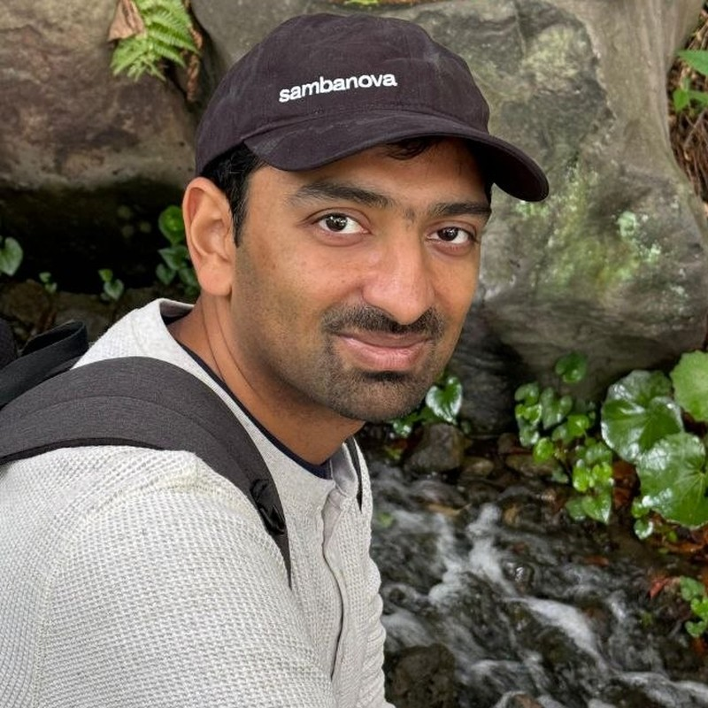
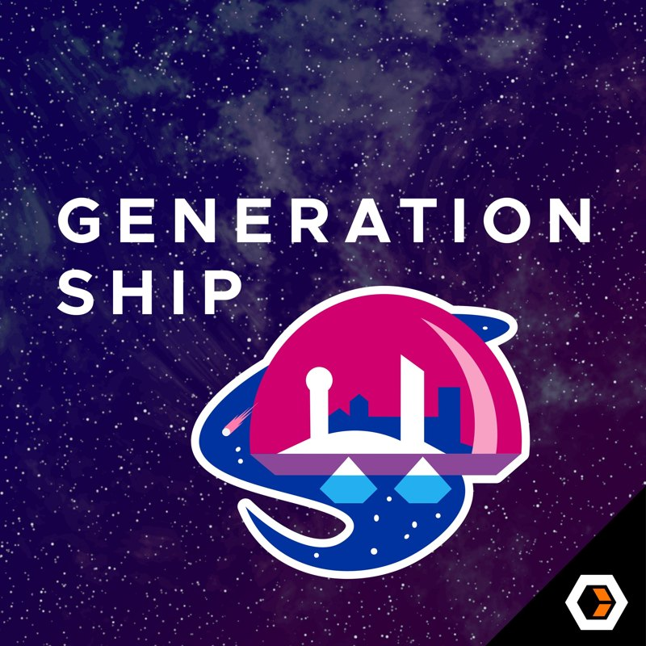
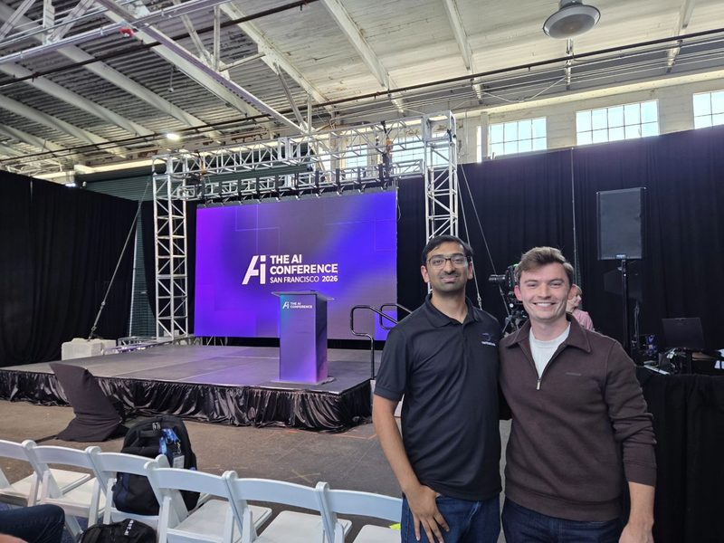
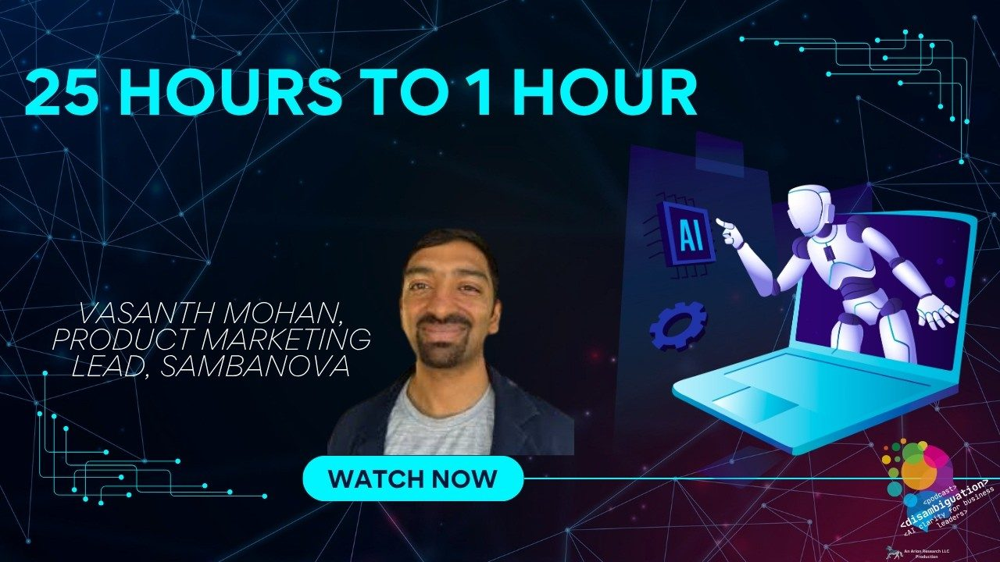

Vasanth Mohan
Senior Director, Product Marketing and Developer Relations at SambaNova
More about Vasanth
Selected work
-

Podcast guest · Generationship · October 14, 2026 The Killer App for AI With Rachel Chalmers on faster agents, engineering judgment, and meaningful business value. -

Speaker · The AI Conference · October 1, 2026 Premium Inference for the Agentic AI Era A discussion with Jason Goodison on the infrastructure behind responsive agents. -

Podcast guest · Disambiguation · September 30, 2026 The Right Chip for the Right Workload With Michael Fauscette on how inference speed shapes the agentic AI era. - Author · SambaNova · June 3, 2026 The First Disaggregated Inference Demo for AI Agents Is Live Writing on disaggregated inference and the infrastructure behind AI agents.